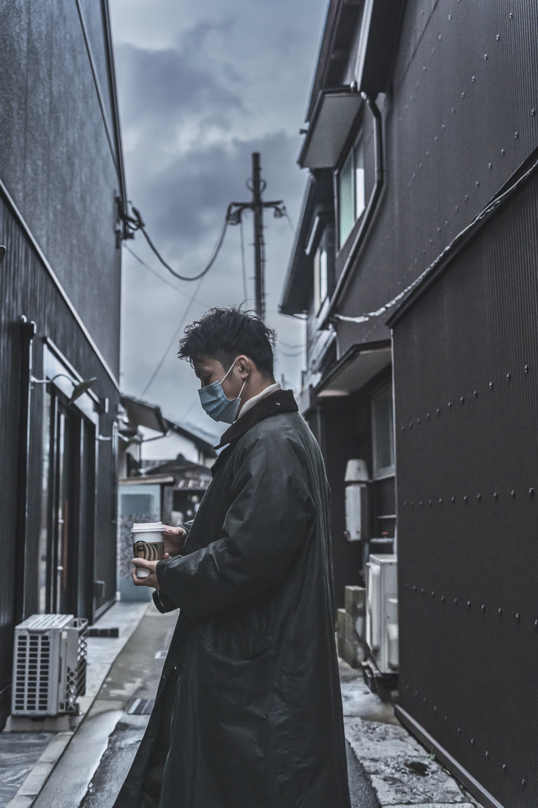
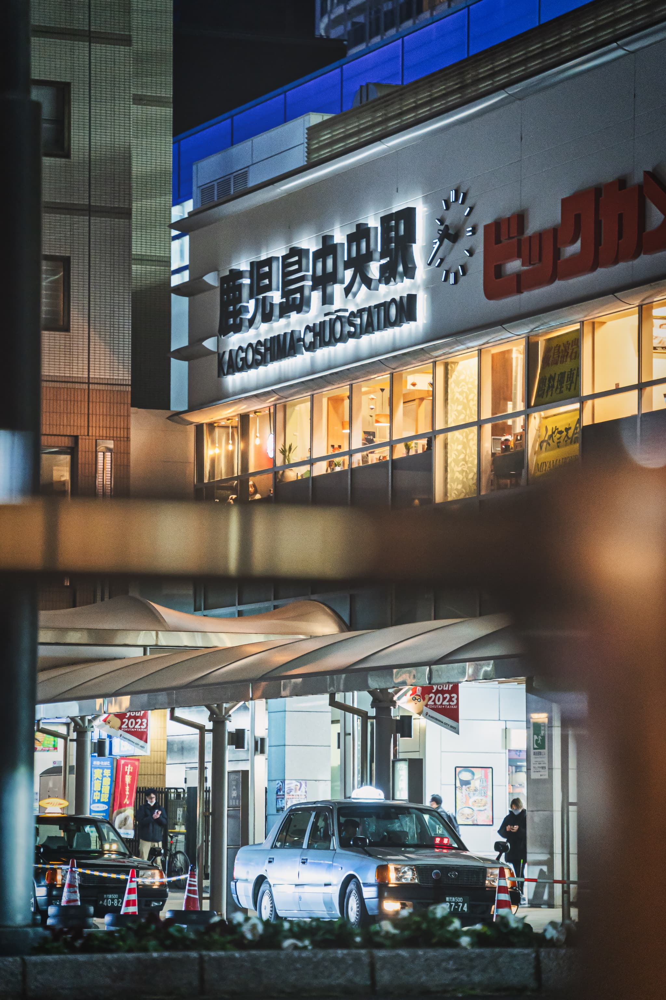
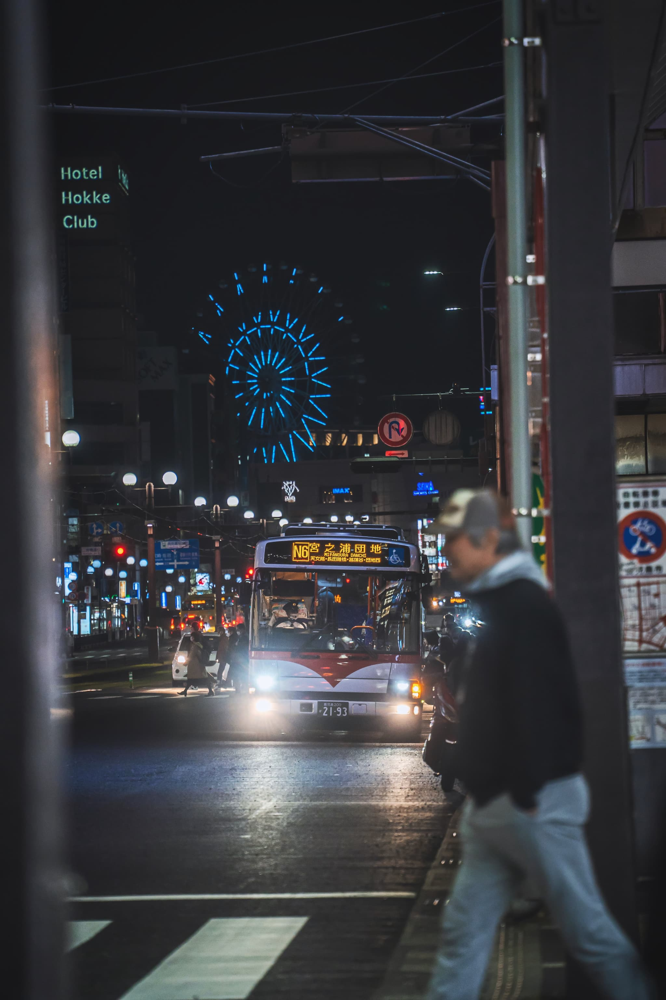
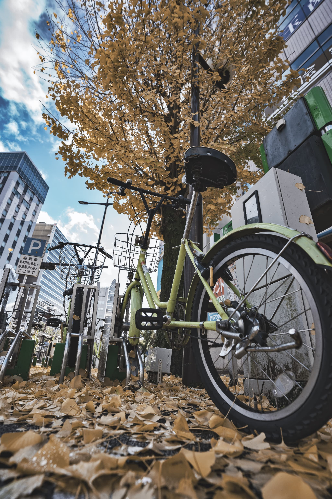
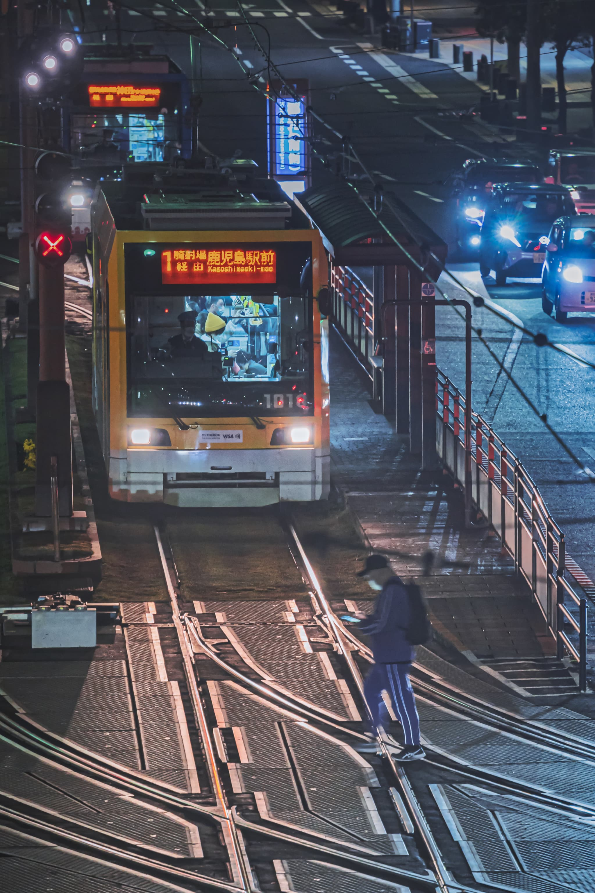

Spot:kagoshima Tokiwa Tunnel
Lens: SEL55F18Z（Sonnar T* FE 55mm F1.8 ZA

Spot:Fukuoka Dazaifu Tenmangu Shrine
Lens: TAMRON 28-200mm F/2.8-5.6 Di III RXD

Spot:Kagoshima Kagoshima Chuo Stasion
Lens: TAMRON 28-200mm F/2.8-5.6 Di III RXD

Spot:Kagoshima Tenmonkan
Lens: TAMRON 28-200mm F/2.8-5.6 Di III RXD

Spot:Kagoshima Takamibaba
Lens: TAMRON 17-28mm F2.8 Di III-A VC RXD

Spot:Kagoshima Korimoto
Lens: TAMRON 28-200mm F/2.8-5.6 Di III RXD